[oauth] google login using flutter-practice
Table of Contents
1. flutter project만들기
shell에서 flutter package(project)를 만든다. flutter create란 명령어를 사용한다. package명은 모두 소문자여야 한다. 보통 snakecase라고 한다.
flutter create login_page
2. GCP 처리
oauth login을 위해서 GCP에 접속해서 할께 있다.
2.1. GCP(Google Cloud Platform)에 app등록
google login 접속을 위해선, GCP에 app등록을 해야한다. 사용자가 goolge login시 인증과 id가 없을때 google 회원가입도 google gcp에서 관장한다.
2.1.1. gcp 접속
여기로 접속한다. login이 안되어 있다면 login한다.
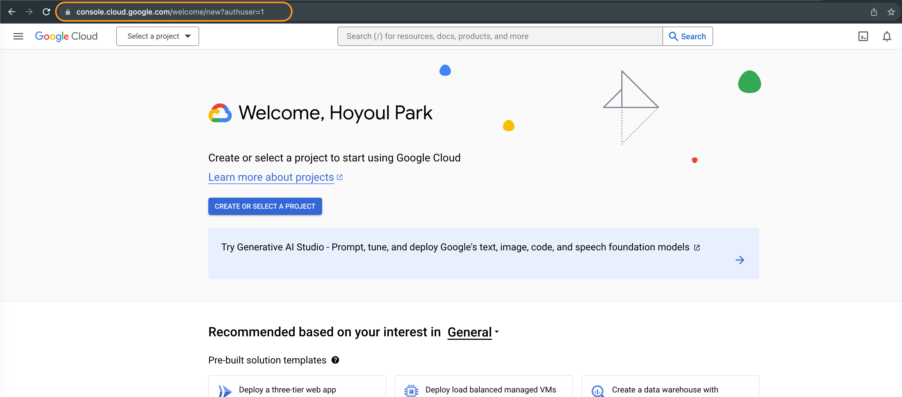
Figure 1: gcp 접속
2.1.2. project 생성
새로운 project를 만들기 위해서 new project를 click한다.
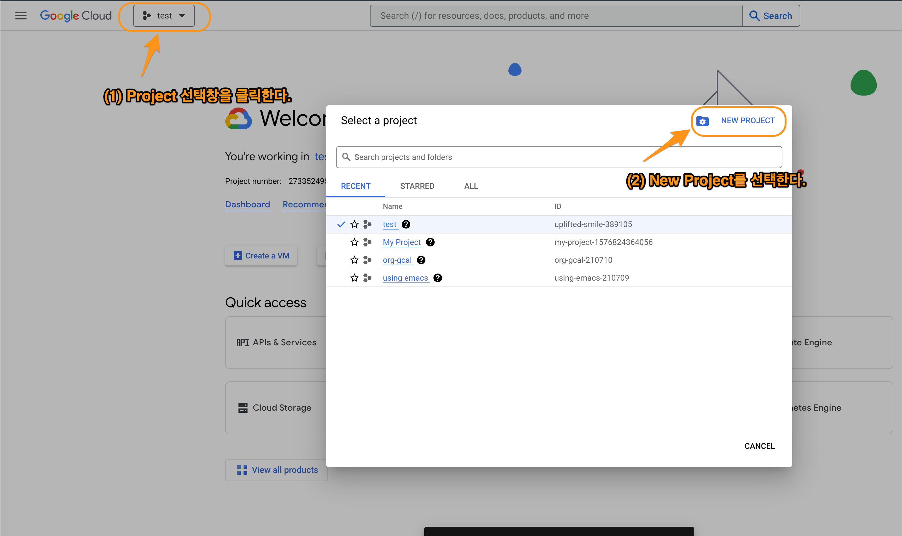
Figure 2: project 생성1
2.1.3. project명 설정
project의 이름을 Google Login이라고 하고, No Organization으로 한다.
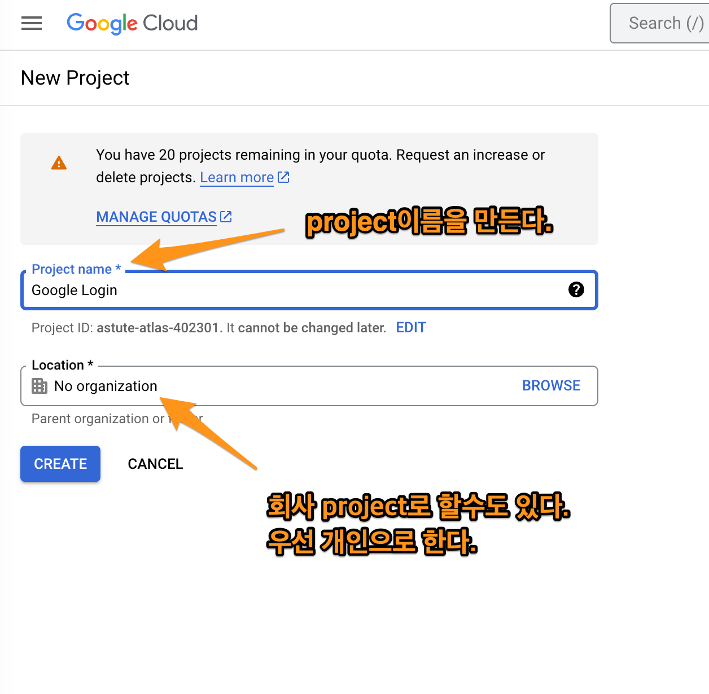
Figure 3: project 생성3
2.1.4. project가 사용할 서비스 설정
API & Service를 선택한다.
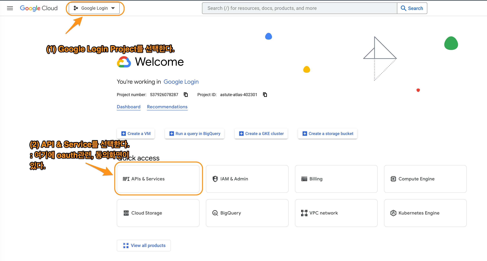
Figure 4: project 생성4
2.1.5. oauth consent screen 설정
사용자에게 동의서 받는 화면을 작성한다. 사용자를 대신해서 app이 GCP resource에 접근할 것이기 때문이다. 동의서 화면은 GCP에서 알아서 만들어준다. 내가 할것은 내 app이 어떤 app이고,이름이 무엇이고, 사용자를 대신해서 어떤 GCP resource를 사용할 지를 GCP에게 전달해주면 된다. GCP에서 사용자 동의서 화면을 만들어준다. 사용자가 oauth를 사용할때 oauth consent화면이 나온다. 이 화면을 어떻게 만들지 설정하는 과정이다. 어떤 사용자가 oauth를 사용할 지를 정하는 과정이다. 추가 설명하자면, 내가 만든 앱에서 GCP resource인 api를 사용할 수도 있고, app을 사용하는 사용자가 app을 통해서 GCP의 api를 사용할 수 있다. 어떤 사용자가 api를 사용하는지를 설정한다.
내 경우, 내가 만든 app을 사용하는 일반사용자가 app을 통해서 GCP 인증 서비스를 사용할 거라서 external을 설정했다.
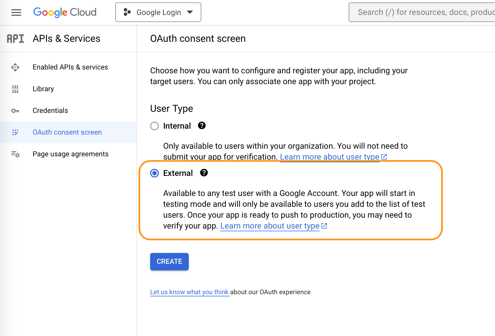
Figure 5: project 생성5
- oauth consent screen2 - app information
app information를 등록한다. app을 통해서 resource를 사용할 것이기 때문이다.
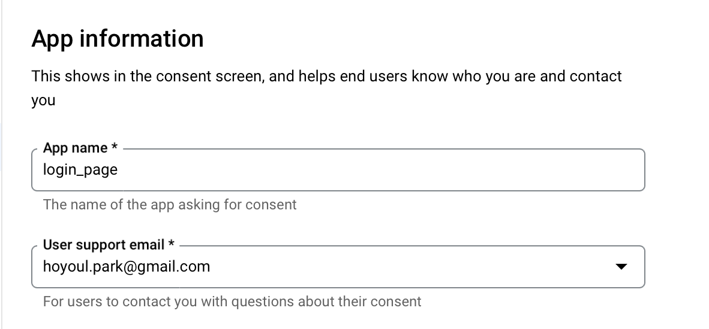
Figure 6: project 생성6
- oauth consent screen3-app logo
consent화면에 보여질 logo를 설정한다.
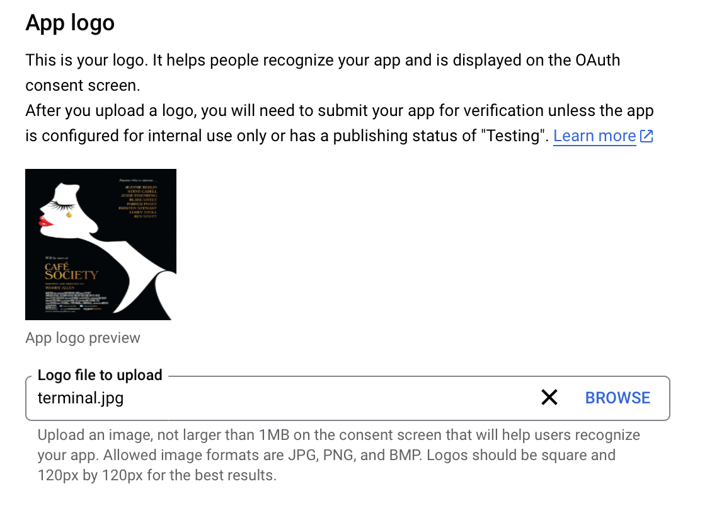
Figure 7: consent logo
- oauth consent screen3-app domain
consent화면에 app을 사용하는 사용자에게 안전하다는것을 보여주기 위해서 app의 homepage, 그리고 policy와 service term을 link로 연결할수 있다. 그것을 setting한다.
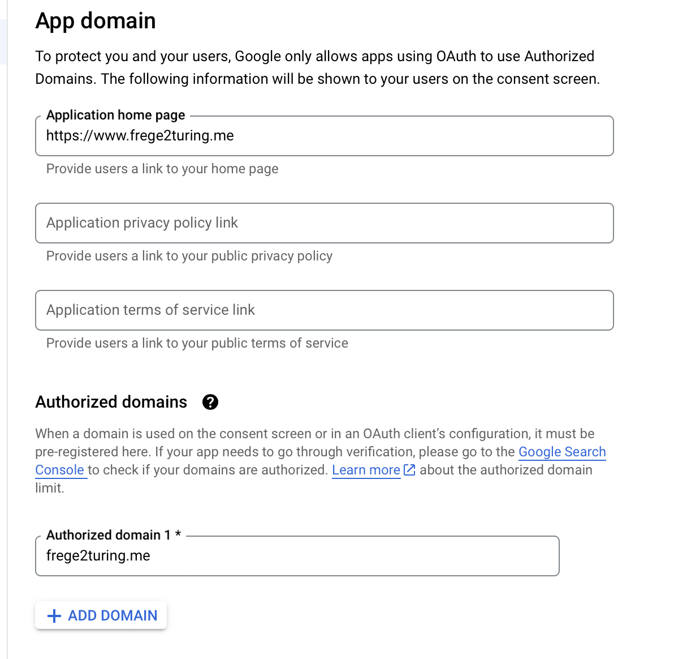
Figure 8: consent term
마지막에 Authorized domain을 설정할때는, google search시 해당 homepage를 찾을 수 있어야 Authorized로 본다. 그렇게 하기 위해선, domain setting 처리를 해야한다. verify를 할려면 Google Search Console을 click해서 처리한다. 우선 나는 처리하지 않았다.
consent화면에선 지금 처리한 것은 다음과 같다.
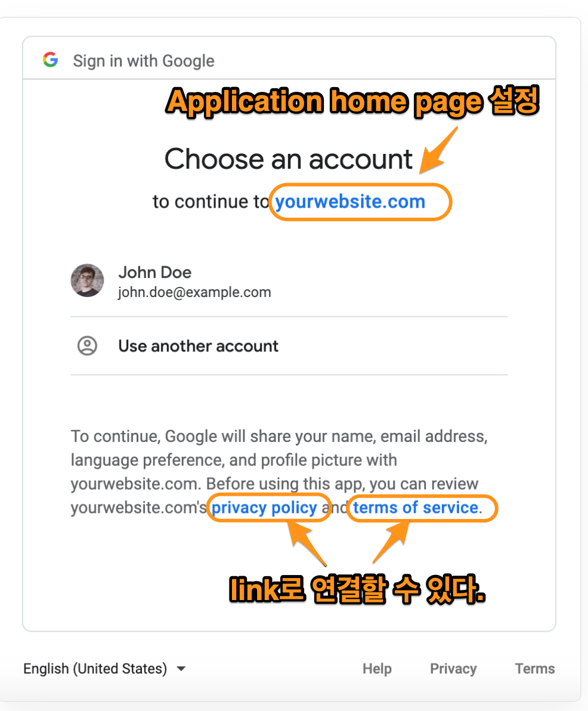
Figure 9: consent term2
- oauth consent screen4- Developer contact information
개발자 주소를 설정한다.
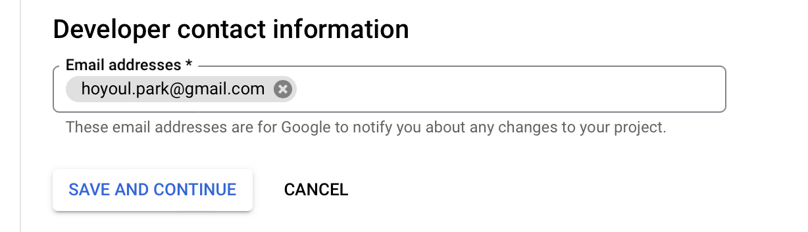
Figure 10: consent term2
2.1.6. scopes 설정
oauth의 말뜻처럼, 권한은 GCP의 resource api를 사용할수 있는 권한인데, 그 권한의 범위(scope)를 설정한다. GCP의 resource 중 우리에게 필요한건 사용자의 간단한 정보뿐이다. 즉, app이 받아와서 사용할 사용자의 정보인데, email, profile,openid resource들을 check한다. 이 정보를 GCP가 가진 resource라고 봐도 된다. 여기서, openID는 oauth에서 인증을 처리하는데 사용하는 id라서 반드시 체크한다. 우리가 oauth를 사용하는 이유는 회원가입 처리하지 않고 login하기 위해서이기 때문이다. 아래처럼 설정하자.
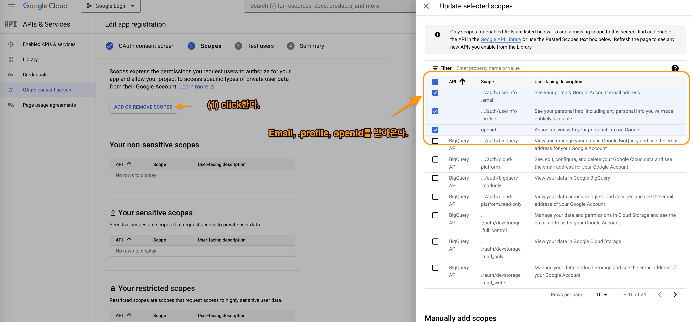
Figure 11: scope
설정하면 다음과 같이 화면이 바뀐다. 우리가 요청한 resource들은 개인정보에 민감하거나 제한적이지 않기 때문에 non-sensitve scopes에서 볼수 있다. 다른 resource를 선택하면 Your sensitive scopes나, Your restrict scopes에서 보여진다.
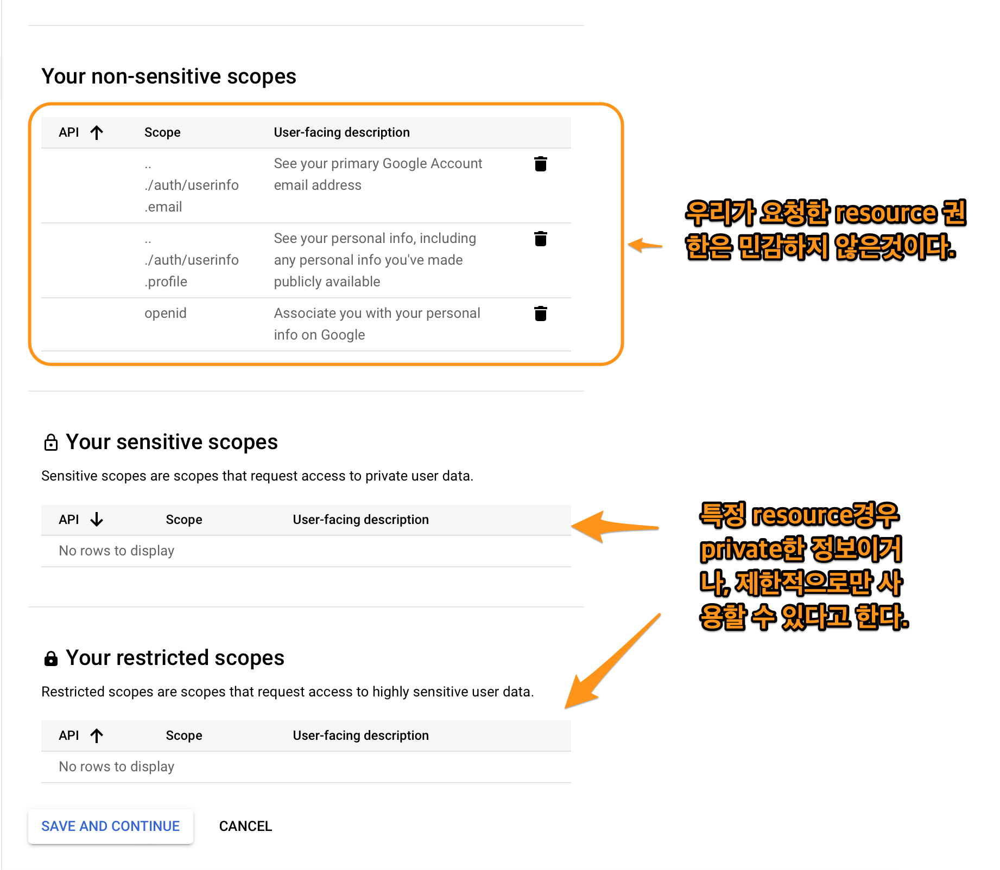
Figure 12: scope
2.1.7. test users 설정
app을 publishing해서 사용자들한테 배포하기전 test단계에선 test user만 이 로긴기능을 사용하게 할 수 있다. 나는 일반인 사용자를 대상으로 test할것이기 때문에, 그냥 건너 뛴다.
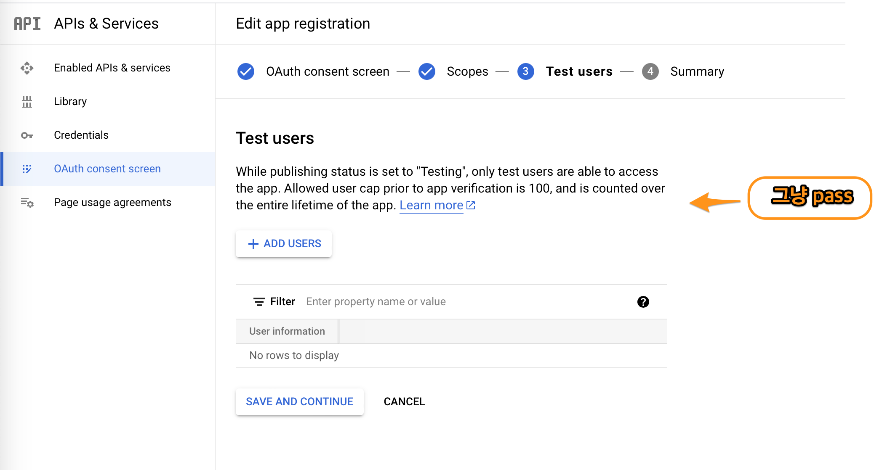
Figure 13: test
2.1.8. summary
여기까지 하면 oauth consent에 대한 처리가 끝났다. 요약화면을 보여준다.
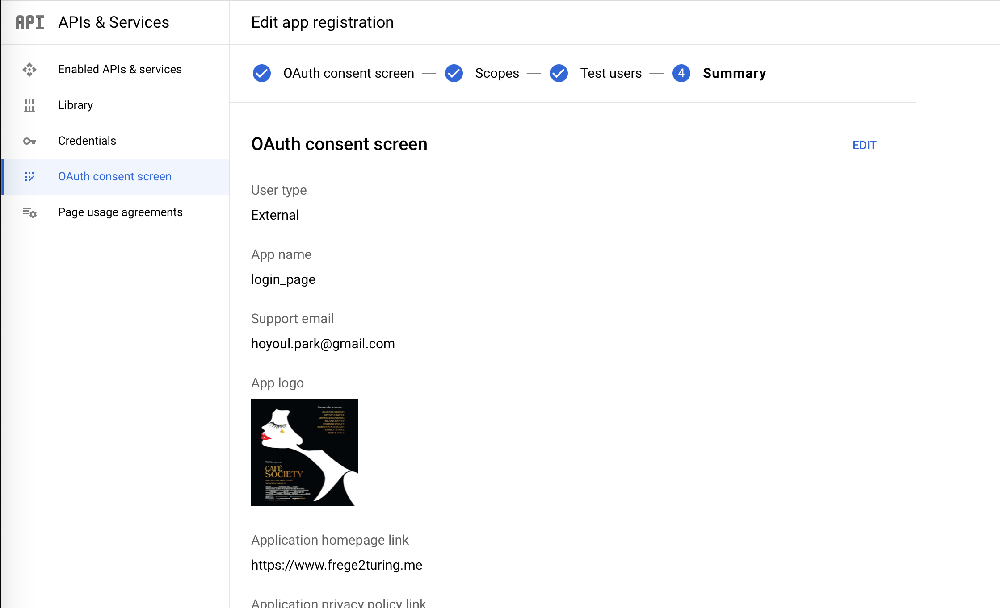
Figure 14: summary
2.1.9. credentials
app이 GCP resource에 접근해야 하기 때문에 credentials가 필요하다. credentials은 ios,android 두개를 생성해야 한다.
- ios credentials
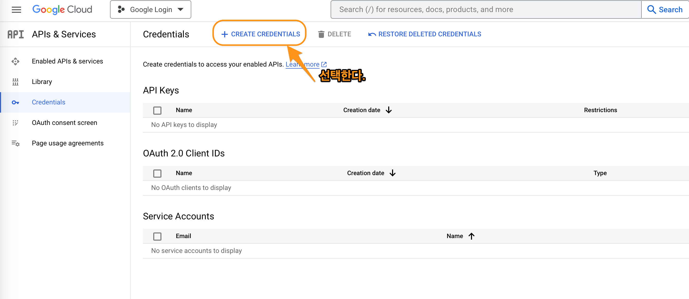
Figure 15: credentials1
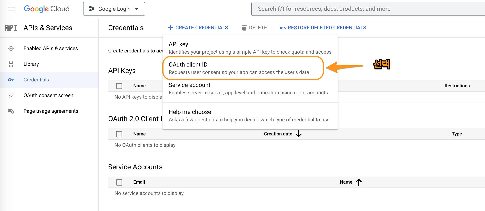
Figure 16: credentials2
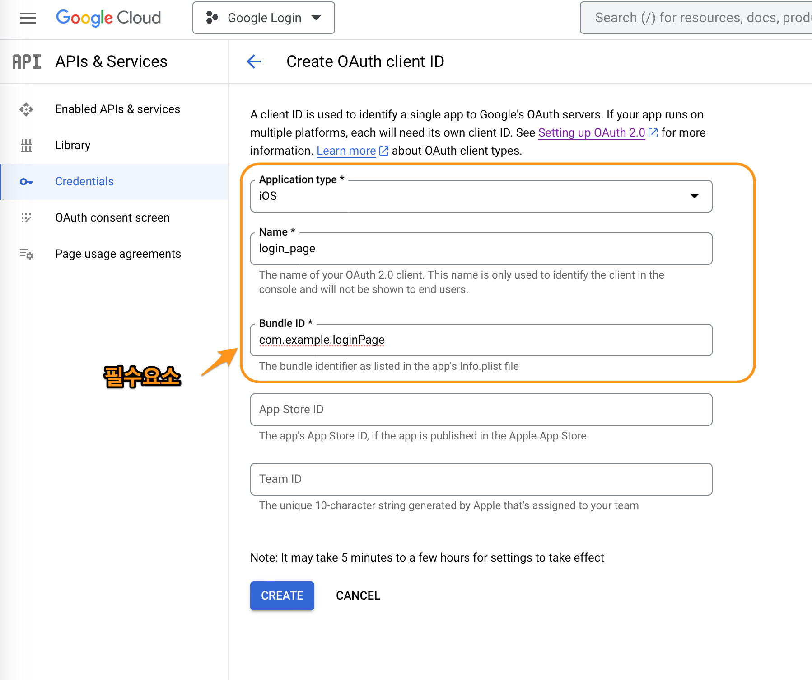
Figure 17: credentials3
여기서 application type, app name은 어렵지 않다. 그런데 bundleID를 어디서 찾아야 할지 모를수 있다. 내 경우 xcode를 실행해서 찾았다. xcode를 실행해서 flutter project의 ios/Runner을 open하면 다음과 같은 화면이 나온다. 여기에서 찾을수 있다.
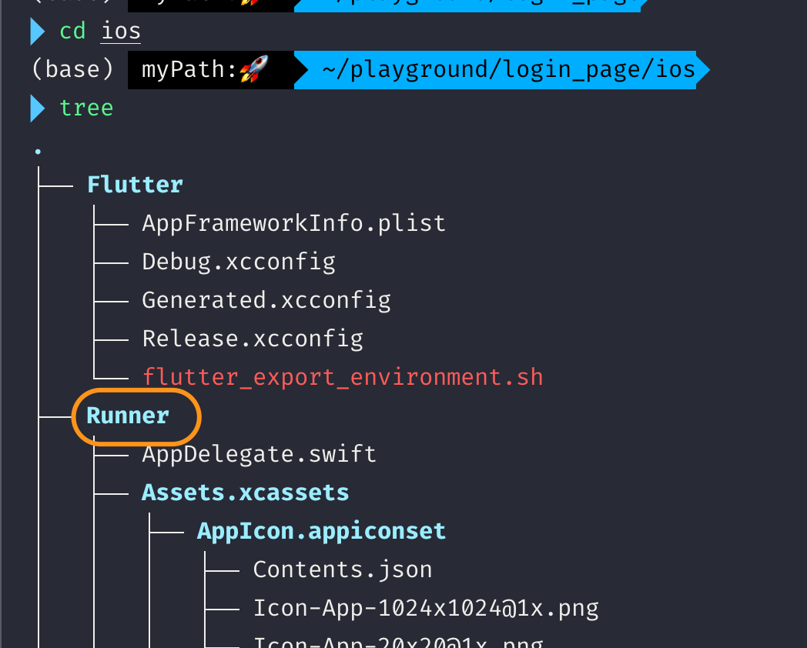
Figure 18: credentials4
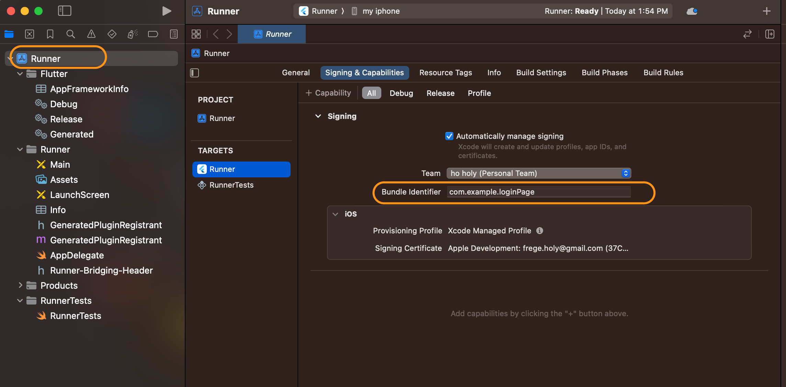
Figure 19: credentials5
이제 여기까지 하고 제출하면 된다. app store id와 team id는 option이고, 출시된 앱이 아니기 때문에 pass한다.
여기까지 하면 client id를 얻게 된다. 이것을 plist로 다운받을 수도 있다. app이 gcp에 접근할수 있게 되는 credentials을 만든것이다.
3. googlesignin package
3.1. 개요
login page는 flutter에서 개발자가 만든다. Google login을 위해서 button도 만든다. google login버튼을 누르면 google에 접속해서 인증과정을 거친다. 이런 것을 모두 개발자가 만들지 않는다. googlesignin package를 사용하면, google에 접속해서 인증과정을 거치는 api를 제공한다. 이때 client ID가 사용된다. client ID는 GCP에 연결해서 credentials에서 client key를 만들어야 한다. google signin package에 있는 demo가 있다. 여기에서 찾을 수 있다.
3.2. Demo실행
3.2.1. googlesignin package
여기에는 demo도 실행해 본다. demo를 실행할때 유의할께 있다. 첫번째, project를 만들고, googlesignin package를 설치한다. 설치는 다음과 같다.
flutter pub add google_sign_in
이것은 자동으로 pubspec.yaml에 googlesignin을 추가해주고 설치까지 해준다. 수동으로 할 수도 있다.
dependencies: google_sign_in: ^6.1.5
pubspec.yaml에 직접 위와 같이 추가하고,
flutter pub get
을 해주면 된다.
설치된 package는 다음과 같이 사용된다.
import 'package:google_sign_in/google_sign_in.dart';
3.2.2. http package
demo에 보면 http package가 있다. 이 package도 설치해 주어야 한다. 아래와 같이 실행해 준다.
flutter pub add http
3.2.3. import 'src/signinbutton.dart'; 에러
이것은 main.dart가 속해있는 폴더의 src폴더아래에 signinbutton.dart라는 파일이 있어야 하는데 없다는 것이다. demo의 소스를 click하면 github이 나오는데, 거기서 해당 파일들을 복사해서 붙여 주면 된다.
3.2.4. 실행
ios simulator를 실행하고, flutter run으로 실행하면 다음과 같은 화면을 볼 수 있다.
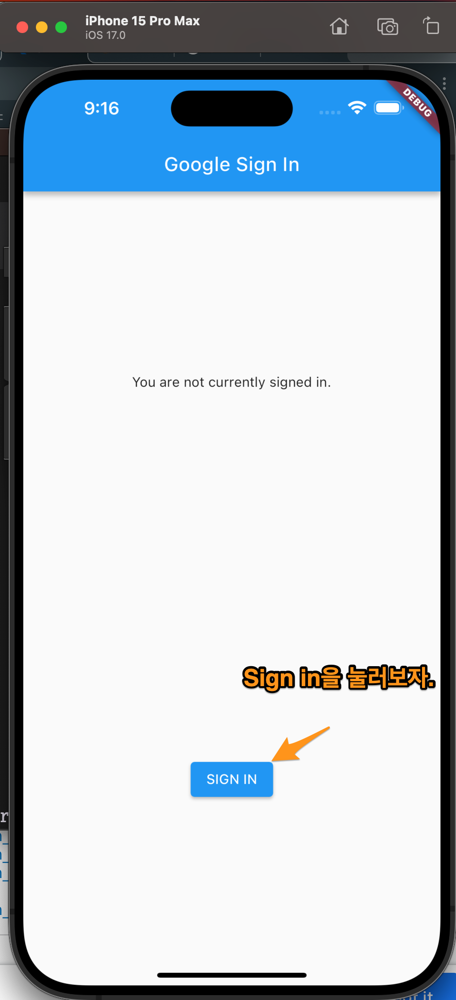
Figure 20: sign in
버튼을 누르면 에러가 발생한다.
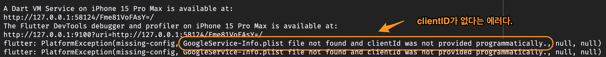
Figure 21: clientID
clientID가 없다는 에러가 난다. GCP에서 credentials을 만들면서 clientId를 다운받았었다. clientId는 info.plist로 다운받았었는데, app에서 GCP로 접속시 인증 처리를 위해서 사용된다. 받은 client ID를 app에 포함시키는것을 integration이라고 한다. googlesignin package에서 readme에 보면 ios integration방법이 나와 있다. android도 나와 있다. ios integration을 따라해보자. 그런데, 여기서는 xcode를 이용한다.
3.2.5. ios integration
- 다운받은 clientid(info.plist)를 GoogleService-Info.plist로 이름을 바꾼다.
- project/ios/Runner 폴더에 복사한다.
- Xcode를 연다.
open project에서 project의 ios/Runner를 선택하면 ios Project가 만들어진다. Runner에 xcworkspace파일이 있어서 가능하다. 아니면 다음과 같이 해도 된다.
open ios/Runner.xcworkspace
xcode가 띄어진 상태에서, project의 Runner디렉토리에 오른쪽 버튼을 눌러서 Add Files To Runner를 선택한다. 그리고 GoogleService-info.plist를 선택한다.
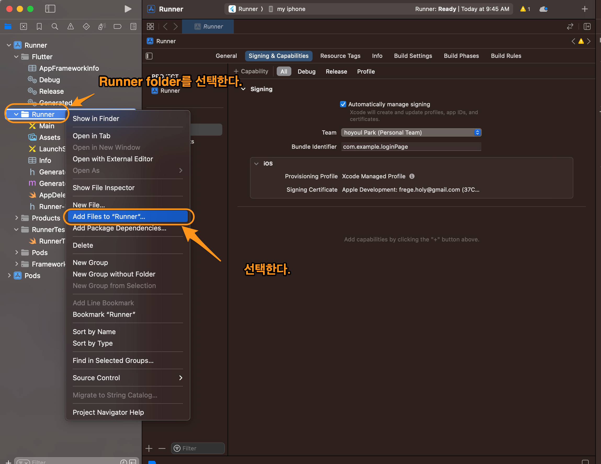
Figure 22: clientid등록